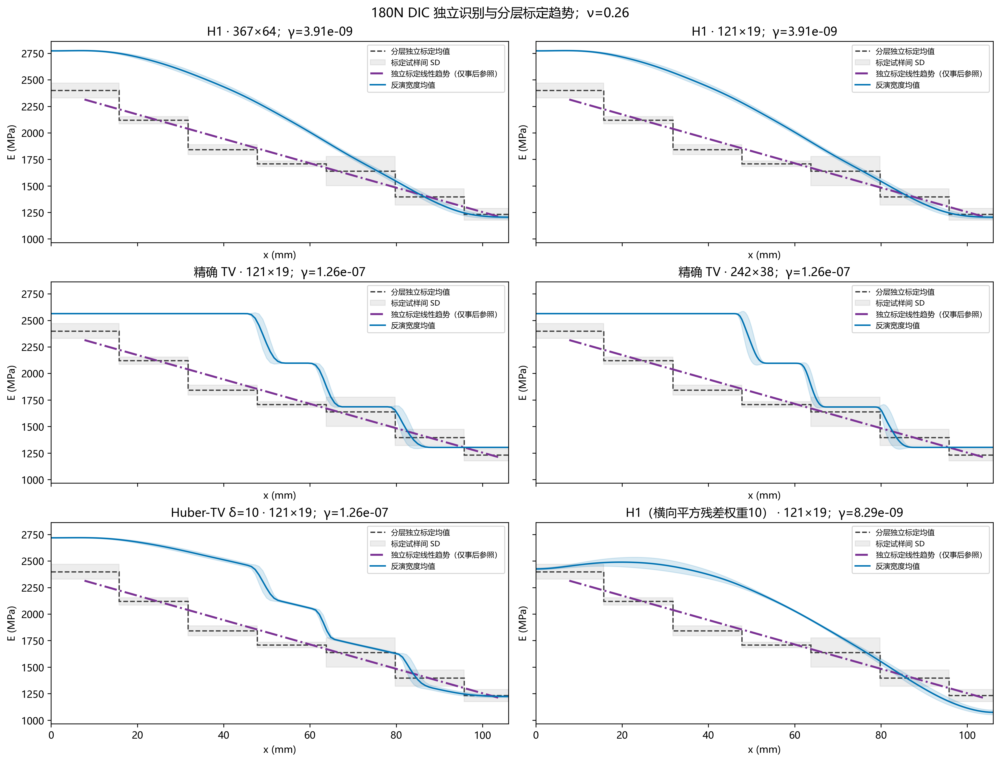
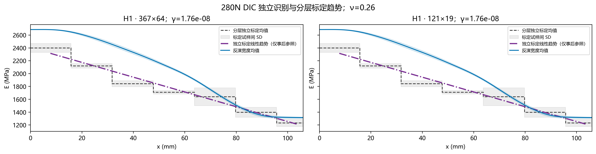
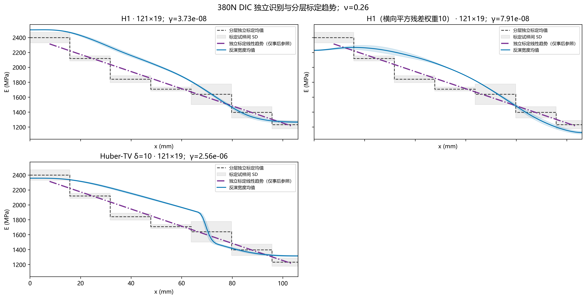
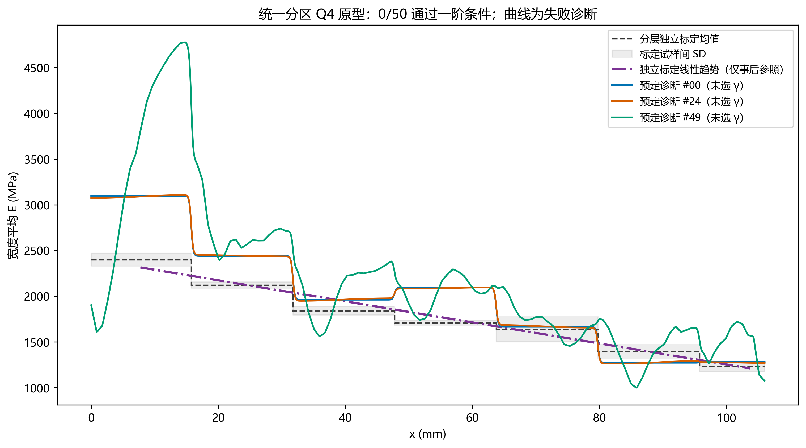

紫色点划线：七组独立标定均值等权线性趋势，仅作事后参照；不是连续材料实测真值，不用于反演、初值、选γ或修改独立标定正演。阶梯与灰带仍表示实际分层标定均值及试样间SD。
趋势沿用既有混合批次 independent 口径：七组均值等权拟合 E=a+b p。p(x) 由原六个材料界面与相邻填充率中值确定；不按 ROI 两端重新等分，不在 40%—100%以外外推。该连续坐标只是趋势比较约定，不代表试样实际连续制造。跨批桥接、物理配准和边界近似限制仍保留。
按识别载荷分别展示，ν=0.26；γ 均保留原选参结果。色带为横向空间离散，不能作为置信区间。380N 使用假定净力319.9 N；不同方法的网格、权重和预算见图例及原结果，不能据此作严格同条件排名。



| run | platform | method | status | selected_gamma |
|---|---|---|---|---|
| results\dic_full | 180N | H1 · 367×64 | computed | 3.906940e-09 |
| results\dic_full\coarse | 180N | H1 · 121×19 | computed | 3.906940e-09 |
| results\dic_full\exact_tv_coarse_20261021 | 180N | 精确 TV · 121×19 | interrupted_for_solver_diagnosis | NaN |
| results\dic_full\exact_tv_coarse_pd_20261021 | 180N | 精确 TV · 121×19 | computed | 1.264855e-07 |
| results\dic_full\exact_tv_refine_242x38_20261021 | 180N | 精确 TV · 242×38 | computed | 1.264855e-07 |
| results\dic_full\h1_280N_independent_20261022 | 280N | H1 · 367×64 | computed | 1.757511e-08 |
| results\dic_full\h1_280N_independent_coarse_20261022 | 280N | H1 · 121×19 | computed | 1.757511e-08 |
| results\dic_full\load380_20261022\exact_tv | 380N | 精确 TV · 121×19 | l_curve_insufficient_corner_support | NaN |
| results\dic_full\load380_20261022\exact_tv_fine | 380N | 精确 TV · 242×38 | l_curve_insufficient_valid_points | NaN |
| results\dic_full\load380_20261022\h1 | 380N | H1 · 121×19 | computed | 3.727594e-08 |
| results\dic_full\load380_20261022\h1_uy10 | 380N | H1（横向平方残差权重10） · 121×19 | computed | 7.906043e-08 |
| results\dic_full\load380_20261022\huber1 | 380N | Huber-TV δ=1 · 121×19 | l_curve_no_resolved_corner | NaN |
| results\dic_full\load380_20261022\huber10 | 380N | Huber-TV δ=10 · 121×19 | computed | 2.559548e-06 |
| results\dic_full\tv | 180N | Huber-TV δ=1 · 121×19 | l_curve_no_resolved_corner | NaN |
| results\dic_full\tv\delta10 | 180N | Huber-TV δ=10 · 121×19 | computed | 1.264855e-07 |
| results\dic_full\uy10 | 180N | H1（横向平方残差权重10） · 121×19 | computed | 8.286428e-09 |
无有效 γ 的方案未补指定正式识别曲线。合成真值测试与历史不同域结果未混入本实验趋势比较。
42×8位移单元；180N和380N分别扫描选参。失败方案保留原注记，P0曲线保持单元常值。

以下三条均为预先指定的失败诊断，不与已选参结果作精度排名；不改变仿真进入条件未通过的结论。
